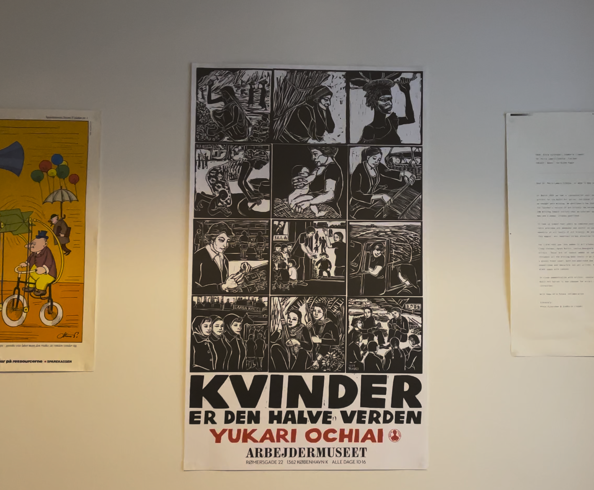
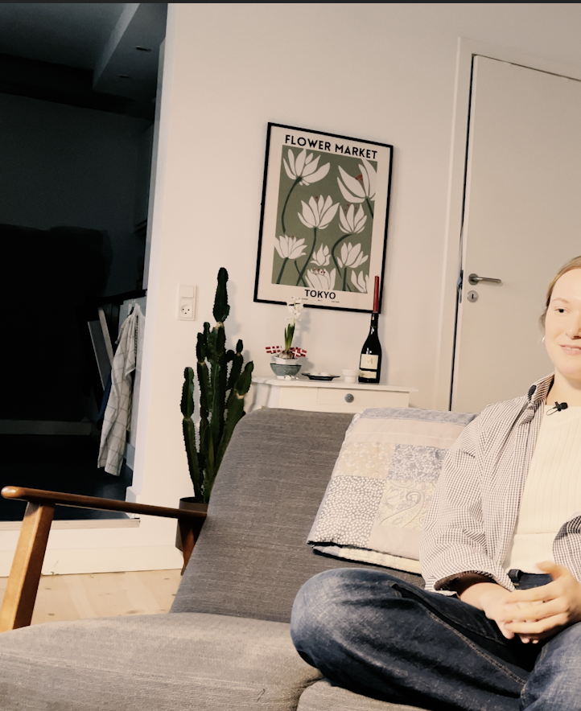
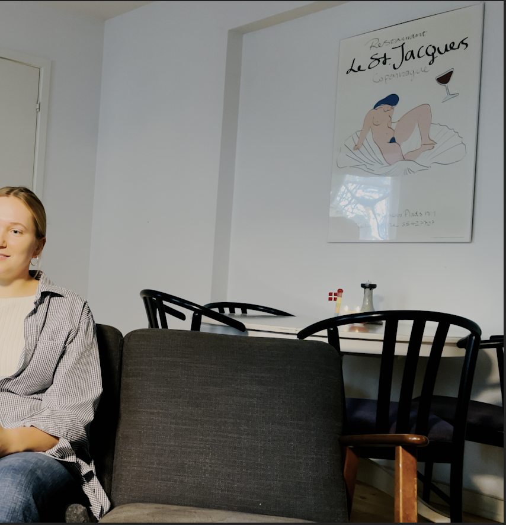

"JEG ER PASSIONERET OMKRING AT FORHOLDE MIG KRITISK TIL DET SAMFUND JEG BEFINDER MIG I"


This is the no LUT no preset still

This is a slighty graded + lut'ed still
The overexposure of the video is due to the fact that shooting with HDR on an iPhone, which is
incompatible with the H.264 file format & settings - and therefore will make the video turn yellowish/incredibly
overexposed. I have tried to export in Apple formats (QuickTime in Apple ProRes HQ HLG) back to the Adobe PP
standard format of (H. 264) - which is 4K.
Hence this, I have exported the video in a monochrome to show how this also will stain the project with an
overexposure of light, even in a monochrome version.
I truly regret using an iPhone to shoot a video with, as Adobe & Mac rarely work well together.
I am used to work with .raw-files from BlackMagics :)